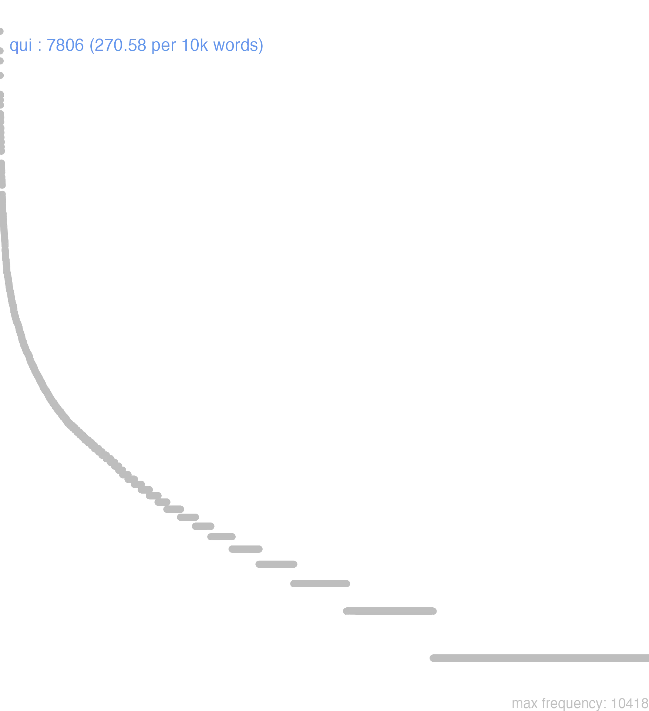

141 qui
141.0.0.1 bases lexicais
id: http://lila-erc.eu/data/id/lemma/121354
classe: pronome
paradigma: pronominal
outras grafias: quei, queique, quique, quoi, quoique
variantes do lema:
no data
quōcum
quoī
quī
quŏd
cuī
no data
141.0.0.2 dicionários tradicionais
cuī
dat. de qui e de quis.
quae
v. qui, quis. quei
arc. v. qui.
queis
e quīs
arc. = quibus.
quīcum
v. qui. quōcum
= cum quo.
quod
acus. neutro de qui, tomado como conj.
arc. = cui.
1 cūjus
gen. de qui e quis.
1 quī quae, quod
pron. relat.
Obs.: Além das formas de abl. sing. qui e pl. quis ou queis, ocorrem ainda o gen. sing. quoius, o dat. sing. quoi, o nom. e ac. n. pl. qua, e as formas com a prep. cum enclítica: quocum, quibuscum, quicum, etc.
dat. de qui e de quis.
quae
v. qui, quis. quei
arc. v. qui.
queis
e quīs
arc. = quibus.
quīcum
v. qui. quōcum
= cum quo.
quod
acus. neutro de qui, tomado como conj.
1 Relativamente a que:
2 donde: por causa de que, por que, em que Plaut. Ep. 456; Plaut. Poen. 547.
3 Iniciando frase: quanto a isso, relativamente a esse ponto Cíc. Phil. 10, 9.
4 Porque muitas vezes em correlação com ec, ideo, idcirco, propterea: v. estas palavras Cíc. Verr. 3, 65.
5 Por, pelo fato de Cíc. A t. 3, 3, 1.
6 Introduzindo uma oração completiva ou uma explicação Cíc. Phil. 2. 91; Cés. B. Gal. 3. 18. 6; Cíc. Fam. 5. 13. 1.
arc. = cui.
1 cūjus
gen. de qui e quis.
1 quī quae, quod
pron. relat.
Obs.: Além das formas de abl. sing. qui e pl. quis ou queis, ocorrem ainda o gen. sing. quoius, o dat. sing. quoi, o nom. e ac. n. pl. qua, e as formas com a prep. cum enclítica: quocum, quibuscum, quicum, etc.
1 I-Relativo: Que, o qual, quem Cés. B. Gal. 1, 3, 1.
2 I-Relativo:-Sent. particular. O que com omissão do antecedente Cíc, Of. 1, 118.
3 I-Relativo:-Sent. particular. Visto que, pois que, porque matiz causal:
4 I-Relativo:-Sent. particular. Se bem que, que, portanto matiz concessivo:
5 I-Relativo:-Sent. particular. A fim de que, para que matiz final:
6 I-Relativo:-Sent. particular. De tal sorte que, tal que matiz consecutivo:
7 II-Interrogativo com valor adj. e subs .. salvo o neutro quod, sempre adj.: Quê? quem? qual?:
8 III-Indefinido: Alguém, algum:
[EXEMPLOS]
3
Antiochus qui animo puerili esset… Cíc. Verr. 4, 65 «Antíoco, porque tinha uma alma pueril».
4
egomet, quí sero Graecas litteras attigisem Cíc De Or. 1, 82 ‘eu mesmo, se bem que me tenha aproximado das letras gregas tardiamente’.
5
eripiunt aliis quod aliis largiantur Cíc. Of. 1, 43 ‘tiram a uns a fim de dar a outros’.
6
is es, qui nescias Cíc. Fam. 5, 12, 6 ‘tu és homem capaz de ignorar’.
7
qui esse ignorabas Cíc. Verr. 5: 166 ‘ignoravas quem ele era?
8
si qui in foro cantet Cíc. Of. 1, 145 ‘se alguém cantasse ou cantar no foro’.
2 quōius
= cuius, gen. de qui, quae, quod, ou de quis, quae qua, quid quod.
2 quōque
= et quo.
no data
Qui quae quod cujus gen cui dat
1 Cic. quem, que, qual.
qui l quae l quod quid l
1 Cic. quem? qual? algum?
1 Cic. quem? qual? algum?
Cic. dat. de Qui Quoi Cic. genit. de Qui Quojus Plaut. ablat. do sing. para todos os generos Qui Plaut. nomin. do sing. por Quae Qui
Quod
Nomen
Adverb. et c. qui
Vide cum.
Nomen
1 o que;
QuodAdverb. et c. qui
1 quem, ou alguem
1 quem, ou alguem
Vide cum.
1 o qual;
no data
141.0.0.3 dados de corpus
![This chart plots collocate by scoreSUBST, for the headword qui here are all the values plotted: collocate: is; scoreSUBST: 0. collocate: sum; scoreSUBST: 0. collocate: in; scoreSUBST: 0. collocate: ego; scoreSUBST: 0. collocate: ille; scoreSUBST: 0. collocate: cum; scoreSUBST: 0. collocate: tu; scoreSUBST: 0. collocate: res; scoreSUBST: 3. collocate: ex; scoreSUBST: 0. collocate: ad; scoreSUBST: 0. collocate: de; scoreSUBST: 0. collocate: ab; scoreSUBST: 0. collocate: quidem; scoreSUBST: 0. collocate: omnis; scoreSUBST: 0. collocate: si; scoreSUBST: 0. collocate: dico; scoreSUBST: 0. collocate: sui; scoreSUBST: 0. collocate: habeo; scoreSUBST: 0. collocate: facio; scoreSUBST: 0. collocate: iste; scoreSUBST: 0. collocate: nos; scoreSUBST: 0. collocate: uolo; scoreSUBST: 0. collocate: nunc; scoreSUBST: 0. collocate: dies; scoreSUBST: 1. collocate: nisi; scoreSUBST: 0. collocate: scribo; scoreSUBST: 0. collocate: autem; scoreSUBST: 0. collocate: scio; scoreSUBST: 0. collocate: magis; scoreSUBST: 0. collocate: nemo; scoreSUBST: 0. collocate: supra; scoreSUBST: 0. collocate: supersum; scoreSUBST: 0. collocate: manduco; scoreSUBST: 0. collocate: profecto; scoreSUBST: 0. collocate: secundum; scoreSUBST: 0. collocate: liber2; scoreSUBST: 2. collocate: recito; scoreSUBST: 0. collocate: primus; scoreSUBST: 0. collocate: Antiochus; scoreSUBST: 0. collocate: mereo; scoreSUBST: 0. collocate: materia; scoreSUBST: 2. collocate: natu; scoreSUBST: 1. collocate: deposco; scoreSUBST: 0. collocate: Syria; scoreSUBST: 0. collocate: tarquinius; scoreSUBST: 0. collocate: trans; scoreSUBST: 0. collocate: concupisco; scoreSUBST: 0. collocate: quondam; scoreSUBST: 0. collocate: summa; scoreSUBST: 2. collocate: plerumque; scoreSUBST: 0. collocate: meritum; scoreSUBST: 1. collocate: ueteranus; scoreSUBST: 0. collocate: iuuentus; scoreSUBST: 2. collocate: uetustas; scoreSUBST: 1. collocate: incido; scoreSUBST: 0. collocate: olim; scoreSUBST: 0. collocate: nimie; scoreSUBST: 0. collocate: super; scoreSUBST: 0. collocate: antea; scoreSUBST: 0. collocate: reperio; scoreSUBST: 0](./Media/wordcloud__xx113-117-105xx__BY_collocate_scoreSUBST.webp)
![This chart plots collocate by scoreADJ, for the headword qui here are all the values plotted: collocate: is; scoreADJ: 0. collocate: sum; scoreADJ: 0. collocate: in; scoreADJ: 0. collocate: ego; scoreADJ: 0. collocate: ille; scoreADJ: 0. collocate: cum; scoreADJ: 0. collocate: tu; scoreADJ: 0. collocate: res; scoreADJ: 0. collocate: ex; scoreADJ: 0. collocate: ad; scoreADJ: 0. collocate: de; scoreADJ: 0. collocate: ab; scoreADJ: 0. collocate: quidem; scoreADJ: 0. collocate: omnis; scoreADJ: 0. collocate: si; scoreADJ: 0. collocate: dico; scoreADJ: 0. collocate: sui; scoreADJ: 0. collocate: habeo; scoreADJ: 0. collocate: facio; scoreADJ: 0. collocate: iste; scoreADJ: 0. collocate: nos; scoreADJ: 0. collocate: uolo; scoreADJ: 0. collocate: nunc; scoreADJ: 0. collocate: dies; scoreADJ: 0. collocate: nisi; scoreADJ: 0. collocate: scribo; scoreADJ: 0. collocate: autem; scoreADJ: 0. collocate: scio; scoreADJ: 0. collocate: magis; scoreADJ: 0. collocate: nemo; scoreADJ: 0. collocate: supra; scoreADJ: 0. collocate: supersum; scoreADJ: 0. collocate: manduco; scoreADJ: 0. collocate: profecto; scoreADJ: 0. collocate: secundum; scoreADJ: 0. collocate: liber2; scoreADJ: 0. collocate: recito; scoreADJ: 0. collocate: primus; scoreADJ: 2. collocate: Antiochus; scoreADJ: 0. collocate: mereo; scoreADJ: 0. collocate: materia; scoreADJ: 0. collocate: natu; scoreADJ: 0. collocate: deposco; scoreADJ: 0. collocate: Syria; scoreADJ: 0. collocate: tarquinius; scoreADJ: 1. collocate: trans; scoreADJ: 0. collocate: concupisco; scoreADJ: 0. collocate: quondam; scoreADJ: 0. collocate: summa; scoreADJ: 0. collocate: plerumque; scoreADJ: 0. collocate: meritum; scoreADJ: 0. collocate: ueteranus; scoreADJ: 1. collocate: iuuentus; scoreADJ: 0. collocate: uetustas; scoreADJ: 0. collocate: incido; scoreADJ: 0. collocate: olim; scoreADJ: 0. collocate: nimie; scoreADJ: 0. collocate: super; scoreADJ: 1. collocate: antea; scoreADJ: 0. collocate: reperio; scoreADJ: 0](./Media/wordcloud__xx113-117-105xx__BY_collocate_scoreADJ.webp)
![This chart plots collocate by scoreVERBO, for the headword qui here are all the values plotted: collocate: is; scoreVERBO: 0. collocate: sum; scoreVERBO: 3. collocate: in; scoreVERBO: 0. collocate: ego; scoreVERBO: 0. collocate: ille; scoreVERBO: 0. collocate: cum; scoreVERBO: 0. collocate: tu; scoreVERBO: 0. collocate: res; scoreVERBO: 0. collocate: ex; scoreVERBO: 0. collocate: ad; scoreVERBO: 0. collocate: de; scoreVERBO: 0. collocate: ab; scoreVERBO: 0. collocate: quidem; scoreVERBO: 0. collocate: omnis; scoreVERBO: 0. collocate: si; scoreVERBO: 0. collocate: dico; scoreVERBO: 2. collocate: sui; scoreVERBO: 0. collocate: habeo; scoreVERBO: 2. collocate: facio; scoreVERBO: 1. collocate: iste; scoreVERBO: 0. collocate: nos; scoreVERBO: 0. collocate: uolo; scoreVERBO: 2. collocate: nunc; scoreVERBO: 0. collocate: dies; scoreVERBO: 0. collocate: nisi; scoreVERBO: 0. collocate: scribo; scoreVERBO: 2. collocate: autem; scoreVERBO: 0. collocate: scio; scoreVERBO: 2. collocate: magis; scoreVERBO: 0. collocate: nemo; scoreVERBO: 0. collocate: supra; scoreVERBO: 0. collocate: supersum; scoreVERBO: 2. collocate: manduco; scoreVERBO: 2. collocate: profecto; scoreVERBO: 0. collocate: secundum; scoreVERBO: 0. collocate: liber2; scoreVERBO: 0. collocate: recito; scoreVERBO: 2. collocate: primus; scoreVERBO: 0. collocate: Antiochus; scoreVERBO: 0. collocate: mereo; scoreVERBO: 2. collocate: materia; scoreVERBO: 0. collocate: natu; scoreVERBO: 0. collocate: deposco; scoreVERBO: 1. collocate: Syria; scoreVERBO: 0. collocate: tarquinius; scoreVERBO: 0. collocate: trans; scoreVERBO: 0. collocate: concupisco; scoreVERBO: 1. collocate: quondam; scoreVERBO: 0. collocate: summa; scoreVERBO: 0. collocate: plerumque; scoreVERBO: 0. collocate: meritum; scoreVERBO: 0. collocate: ueteranus; scoreVERBO: 0. collocate: iuuentus; scoreVERBO: 0. collocate: uetustas; scoreVERBO: 0. collocate: incido; scoreVERBO: 2. collocate: olim; scoreVERBO: 0. collocate: nimie; scoreVERBO: 0. collocate: super; scoreVERBO: 0. collocate: antea; scoreVERBO: 0. collocate: reperio; scoreVERBO: 2](./Media/wordcloud__xx113-117-105xx__BY_collocate_scoreVERBO.webp)
![This chart plots collocate by scoreADV, for the headword qui here are all the values plotted: collocate: is; scoreADV: 0. collocate: sum; scoreADV: 0. collocate: in; scoreADV: 0. collocate: ego; scoreADV: 0. collocate: ille; scoreADV: 0. collocate: cum; scoreADV: 0. collocate: tu; scoreADV: 0. collocate: res; scoreADV: 0. collocate: ex; scoreADV: 0. collocate: ad; scoreADV: 0. collocate: de; scoreADV: 0. collocate: ab; scoreADV: 0. collocate: quidem; scoreADV: 4. collocate: omnis; scoreADV: 0. collocate: si; scoreADV: 0. collocate: dico; scoreADV: 0. collocate: sui; scoreADV: 0. collocate: habeo; scoreADV: 0. collocate: facio; scoreADV: 0. collocate: iste; scoreADV: 0. collocate: nos; scoreADV: 0. collocate: uolo; scoreADV: 0. collocate: nunc; scoreADV: 2. collocate: dies; scoreADV: 0. collocate: nisi; scoreADV: 0. collocate: scribo; scoreADV: 0. collocate: autem; scoreADV: 0. collocate: scio; scoreADV: 0. collocate: magis; scoreADV: 1. collocate: nemo; scoreADV: 0. collocate: supra; scoreADV: 0. collocate: supersum; scoreADV: 0. collocate: manduco; scoreADV: 0. collocate: profecto; scoreADV: 2. collocate: secundum; scoreADV: 0. collocate: liber2; scoreADV: 0. collocate: recito; scoreADV: 0. collocate: primus; scoreADV: 0. collocate: Antiochus; scoreADV: 0. collocate: mereo; scoreADV: 0. collocate: materia; scoreADV: 0. collocate: natu; scoreADV: 0. collocate: deposco; scoreADV: 0. collocate: Syria; scoreADV: 0. collocate: tarquinius; scoreADV: 0. collocate: trans; scoreADV: 0. collocate: concupisco; scoreADV: 0. collocate: quondam; scoreADV: 2. collocate: summa; scoreADV: 0. collocate: plerumque; scoreADV: 1. collocate: meritum; scoreADV: 0. collocate: ueteranus; scoreADV: 0. collocate: iuuentus; scoreADV: 0. collocate: uetustas; scoreADV: 0. collocate: incido; scoreADV: 0. collocate: olim; scoreADV: 1. collocate: nimie; scoreADV: 1. collocate: super; scoreADV: 0. collocate: antea; scoreADV: 2. collocate: reperio; scoreADV: 0](./Media/wordcloud__xx113-117-105xx__BY_collocate_scoreADV.webp)
![This chart plots collocate by scoreFUNC, for the headword qui here are all the values plotted: collocate: is; scoreFUNC: 0. collocate: sum; scoreFUNC: 0. collocate: in; scoreFUNC: 40. collocate: ego; scoreFUNC: 0. collocate: ille; scoreFUNC: 0. collocate: cum; scoreFUNC: 20. collocate: tu; scoreFUNC: 0. collocate: res; scoreFUNC: 0. collocate: ex; scoreFUNC: 30. collocate: ad; scoreFUNC: 20. collocate: de; scoreFUNC: 20. collocate: ab; scoreFUNC: 20. collocate: quidem; scoreFUNC: 0. collocate: omnis; scoreFUNC: 0. collocate: si; scoreFUNC: 10. collocate: dico; scoreFUNC: 0. collocate: sui; scoreFUNC: 0. collocate: habeo; scoreFUNC: 0. collocate: facio; scoreFUNC: 0. collocate: iste; scoreFUNC: 0. collocate: nos; scoreFUNC: 0. collocate: uolo; scoreFUNC: 0. collocate: nunc; scoreFUNC: 0. collocate: dies; scoreFUNC: 0. collocate: nisi; scoreFUNC: 20. collocate: scribo; scoreFUNC: 0. collocate: autem; scoreFUNC: 0. collocate: scio; scoreFUNC: 0. collocate: magis; scoreFUNC: 0. collocate: nemo; scoreFUNC: 0. collocate: supra; scoreFUNC: 20. collocate: supersum; scoreFUNC: 0. collocate: manduco; scoreFUNC: 0. collocate: profecto; scoreFUNC: 0. collocate: secundum; scoreFUNC: 20. collocate: liber2; scoreFUNC: 0. collocate: recito; scoreFUNC: 0. collocate: primus; scoreFUNC: 0. collocate: Antiochus; scoreFUNC: 0. collocate: mereo; scoreFUNC: 0. collocate: materia; scoreFUNC: 0. collocate: natu; scoreFUNC: 0. collocate: deposco; scoreFUNC: 0. collocate: Syria; scoreFUNC: 0. collocate: tarquinius; scoreFUNC: 0. collocate: trans; scoreFUNC: 20. collocate: concupisco; scoreFUNC: 0. collocate: quondam; scoreFUNC: 0. collocate: summa; scoreFUNC: 0. collocate: plerumque; scoreFUNC: 0. collocate: meritum; scoreFUNC: 0. collocate: ueteranus; scoreFUNC: 0. collocate: iuuentus; scoreFUNC: 0. collocate: uetustas; scoreFUNC: 0. collocate: incido; scoreFUNC: 0. collocate: olim; scoreFUNC: 0. collocate: nimie; scoreFUNC: 0. collocate: super; scoreFUNC: 0. collocate: antea; scoreFUNC: 0. collocate: reperio; scoreFUNC: 0](./Media/wordcloud__xx113-117-105xx__BY_collocate_scoreFUNC.webp)
![This charts plots the frequency of lemma by author_Frequencies. The Cicero subcorpus registers the highest normalized frequency, with the value of 300.33 and an absolute frequency of 4821. The Caesar subcorpus follows, with a normalized frequency of 269.28 and an absolute frequency of 713. the subcorpus with the least normalized frequency is Suetonius with the normalized value of 110.25 and an absolute freqeuncy of 10. here are all the values: subcorpus: Caesar ; normalized frequency: 713 ; absolute frequency: 269.280157111564. subcorpus: Cicero ; normalized frequency: 4821 ; absolute frequency: 300.328922777902. subcorpus: Horatius ; normalized frequency: 201 ; absolute frequency: 178.492141017672. subcorpus: Ovidius ; normalized frequency: 71 ; absolute frequency: 121.825669183253. subcorpus: Phaedrus ; normalized frequency: 146 ; absolute frequency: 221.648701988766. subcorpus: Sallustius ; normalized frequency: 222 ; absolute frequency: 205.917818384194. subcorpus: Seneca ; normalized frequency: 1425 ; absolute frequency: 265.952483156343. subcorpus: Suetonius ; normalized frequency: 10 ; absolute frequency: 110.253583241455. subcorpus: Tacitus ; normalized frequency: 45 ; absolute frequency: 154.479917610711. subcorpus: Vergilius ; normalized frequency: 63 ; absolute frequency: 121.621621621622. subcorpus: Hieronymus ; normalized frequency: 89 ; absolute frequency: 199.955066277241](./Media/barchart__xx113-117-105xx__lemma_BY_author_Frequencies.webp)
![This charts plots the frequency of lemma by genre_Frequencies. The Prosa.filosófica subcorpus registers the highest normalized frequency, with the value of 321.25 and an absolute frequency of 1950. The Prosa.filosófica subcorpus follows, with a normalized frequency of 321.25 and an absolute frequency of 1950. the subcorpus with the least normalized frequency is Poesia.trágica with the normalized value of 113.79 and an absolute freqeuncy of 131. here are all the values: subcorpus: Prosa.histórica ; normalized frequency: 990 ; absolute frequency: 240.999050609801. subcorpus: Prosa.filosófica ; normalized frequency: 1950 ; absolute frequency: 321.246766939589. subcorpus: Prosa.oratória ; normalized frequency: 3147 ; absolute frequency: 302.151642295469. subcorpus: Prosa.epistolográfica ; normalized frequency: 1018 ; absolute frequency: 269.747476085747. subcorpus: Poesia.lírica ; normalized frequency: 212 ; absolute frequency: 178.346092369816. subcorpus: Poesia.didática ; normalized frequency: 206 ; absolute frequency: 174.73916362711. subcorpus: Poesia.trágica ; normalized frequency: 131 ; absolute frequency: 113.794301598332. subcorpus: Poesia.épica ; normalized frequency: 63 ; absolute frequency: 121.621621621622. subcorpus: Prosa.ficcional ; normalized frequency: 89 ; absolute frequency: 199.955066277241](./Media/barchart__xx113-117-105xx__lemma_BY_genre_Frequencies.webp)
![This charts plots the frequency of lemma by period_Frequencies. The I.a.C. subcorpus registers the highest normalized frequency, with the value of 280.71 and an absolute frequency of 6031. The I.a.C. subcorpus follows, with a normalized frequency of 280.71 and an absolute frequency of 6031. the subcorpus with the least normalized frequency is II.d.C. with the normalized value of 143.98 and an absolute freqeuncy of 55. here are all the values: subcorpus: I.a.C. ; normalized frequency: 6031 ; absolute frequency: 280.707470328136. subcorpus: I.d.C. ; normalized frequency: 1631 ; absolute frequency: 249.502830044363. subcorpus: II.d.C. ; normalized frequency: 55 ; absolute frequency: 143.979057591623. subcorpus: IV.d.C. ; normalized frequency: 89 ; absolute frequency: 199.955066277241](./Media/barchart__xx113-117-105xx__lemma_BY_period_Frequencies.webp)
sed scis qui
Cic.Att.4.16.4
Mas sabes quem ele é. [JDD]
nunc audi quod quaeris
Cic.Att.2.9.4
Ouve agora o que queres saber. [JDD]
quod superest di iuvent
Cic.Att.5.11.4
Quanto ao que resta, que os deuses nos ajudem! [JDD]
nunc ad ea quae scripsisti
Cic.Att.3.8.3
Agora, vamos ao que escreveste. [JDD]
quod ipsum sentire certo scio
Cic.Att.5.11.6
e sei com certeza que ele próprio percebe isso. [JDD]
cui mederi nunc non possumus
Cic.Att.1.19.9
no momento não posso cuidar dele. [JDD]
dicam plane Caesar quod sentio
Cic.Lig.14
Vou dizer claramente o que penso, César. [JDD]
quod si impetrasset iudicia fore videbantur
Cic.Att.2.24.4
se consegue isso, parece que haverá processos. [JDD]
nescisse cupies nosse quae nimium expetis
Sen.Oed.514
Desejarás não ter sabido o que buscas demasiadamente saber. [JDD]
quae γυμνασιώδη maxime sunt ea quaero
Cic.Att.1.9.2
As coisas que são especialmente ‘dignas de ginásio’ eu busco. [JDD]
hoc quod secundum cuiusque naturam est
Sen.Ep.124.13
Isto que é conforme a natureza de cada um. [JDD]
illam autem quam locavit facit magnificentissimam
Cic.Att.4.17.7
Por outro lado, aquela que alugou a está tornando magnificentíssima. [JDD]
quas certo scio plenas timoris fore
Cic.Att.5.21.2
sei com certeza que ela estará cheia de temor. [JDD]
alia via si qua potes pugna
Cic.Att.1.20.4
Luta por outro caminho, se é que podes. [JDD]
quibus adductis eos in fidem recipit
Caes.Gal.4.22.3
Levados esses, os recebe em fidelidade. [JDD, de outra edição]
quae res magno usui nostris fuit
Caes.Gal.4.25.1
coisa que foi de grande utilidade para os nossos. [JDD]
adhuc invitamur benigne sed quod superest timemus
Cic.Att.3.4
Até o momento me convidam de bom grado, mas temo o que está por vir. [JDD]
dementes hoc quod aliquando concupiscunt semper timent
Sen.Helv.12.3
Loucos! Sempre temem isso que de vez em quando desejam. [JDD]
qui si sustulerint religionem aream praeclaram habebimus
Cic.Att.4.1.7
Se eles anularem a sagração, tenho um terreno esplêndido. [JDD, de outra edição]
quo in genere est in primis senectus
Cic.Sen.4
E nessa classe a velhice está em primeiro plano. [JDD]
dicimus beata esse quae secundum naturam sint
Sen.Ep.124.7
Nós dizemos que são felizes as coisas que são de acordo com a natureza. [JDD]
etiam illud cuius modi sit velim perspicias
Cic.Att.4.11.1
Inclusive gostaria que verificasses como está aquele assunto. [JDD]
quod ut ne accidat magis cauendum est
Cic.Amici.99
Para que isso não ocorra, deve-se precaver ainda mais. [JDD]
erant autem qui manducaverunt quasi quattuor milia
Vulg.Marc.8.9
E eram os que comeram cerca de quatro mil [JDD]
qua re impetrata arma tradere iussi faciunt
Caes.Gal.3.21.3
Conseguida essa coisa, ordenados a entregar as armas, eles fazem. [JDD]
id bonum cura quod uetustate fit melius
Sen.Ep.15.5
Cuida desse bem que com a velhice se torna melhor. [JDD]
de iis qui nunc petunt Caesar certus putatur
Cic.Att.1.1.2
Dos que se candidatam agora (para este ano), César (Lúcio Júlio César) é considerado como certo. [JDD, de outra edição]
sed tamen etiam illud quod non speraram audi
Cic.Att.1.14.6
Mas escuta também algo que eu não esperava. [JDD]
idem est autem omni saeculo quod sat est
Sen.Ep.17.10
porém o que basta é o mesmo em qualquer época. [JDD]
quod quidem in hac aetate minime reprendendum est
Cic.Cael.18
O que, por certo, nesta sua idade, não deve ser recriminado de modo algum. [JDD]
ex quo quantum boni sit in amicitia iudicari potest
Cic.Amici.23
Disso pode-se julgar quanto bem há na amizade. [JDD]
quod sane facile patiar si tuo commodo fieri possit
Cic.Att.2.17.3
o que sem dúvida suportarei facilmente se pode ocorrer conforme te convier. [JDD]
quibus cum prouocatio datur ne ne acta Caesaris rescinduntur
Cic.Phil.1.23.3
Quando é concedida a estes a apelação, não se rescindem as resoluções de César? [JDD]
non queo plura scribere ne c est quod scribam
Cic.Att.3.12.3
Não consigo escrever mais, nem há o que escrever. [JDD, de outra edição]
Qua nimium placui , mutando perde figuram ! ’
Ov.Met.1.546
destrói, transformando, esta figura, com a qual agradei em demasia!” [JDD, de outra edição]
ita bonum in nullo est nisi in quo ratio
Sen.Ep.124.20
Assim não existe o bem em ninguém a não ser em quem existe a razão. [JDD]
odia qui nimium timet regnare nescit regna custodit metus
Sen.Oed.703
quem teme demasiadamente os ódios não sabe reinar: o medo guarda os reinos. [JDD]
nunc venio ad eam epistulam quam accepi a Tullio
Cic.Att.5.4.2
Agora venho a essa carta que recebi de Túlio. [JDD]
erant omnino itinera duo quibus itineribus domo exire possent
Caes.Gal.1.6.1
Havia tão somente dois caminhos, pelos quais podiam sair de sua terra. [JDD]
ubi enim istum inuenias qui honorem amici anteponat suo
Cic.Amici.64
pois onde encontrarias esse que antepõe ao seu o cargo do amigo? [JDD]
quae omnia ab his diligenter ad diem facta sunt
Caes.Gal.2.5.1
E todas essas coisas foram diligentemente feitas por estes no dia marcado. [JDD]
triginta unus fuerunt quos fames magis quam fama commoverit
Cic.Att.1.16.5
houve 31 aos quais mais a fome do que a fama influenciou. [JDD, de outra edição]
Caesar iis quos in castris retinuerat discedendi potestatem fecit
Caes.Gal.4.15.4
César deu a possibilidade de irem-se aqueles que ele tinha detido no acampamento. [JDD]
Caesar his de causis quas commemoraui Rhenum transire decreuerat
Caes.Gal.4.17.1
César, por esses motivos que lembrei, tinha decretado atravessar o Reno. [JDD]
cuius enim scelere impulsi ac proditi simus iam profecto vides
Cic.Att.3.8.4
Pois seguramente já vês pelo crime de quem fui impelido e traído. [JDD, de outra edição]
quae ista est eodem tribuno plebis et inimico consule designato
Cic.Att.3.12.1
Que esperança é essa com o mesmo tribuno da plebe e um inimigo meu como cônsul designado? [JDD]
quod do operam ut faciam quam minima cum illius contumelia
Cic.Att.5.17.6
o que me esforço para fazer com o menor dano possível dela. [JDD]
Qui pretium meriti ab improbis desiderat , Bis peccat :
Phaed.1.8
Quem espera dos malvados a recompensa de um serviço prestado, erra duas vezes. [JDD]
atque haec ei loquuntur qui quondam propter leuitatem populares habebantur
Cic.Phil.7.4.1
E falam essas coisas os que outrora, por causa de sua leviandade, eram tidos como populares. [JDD]
in hos eadem omnia sunt iura quae dominis in seruos
Caes.Gal.6.13.2
e sobre eles têm todos os mesmos direitos que os senhores têm sobre seus escravos. [JDD]
141.0.0.4 Diagrama de Zipf
